Import Your .VRM Model Into Animaze
Animaze now supports VRM models! To get your VRM model into Animaze and ready for broadcast, the general workflow can be made in 2 easy methods:
1. source a.VRM model file and then add it in Animaze Desktop directly
2. import the model through the Animaze Editor, make the amendments you want (tweak shadows on meshes, adjust name&description, change icon, camera settings etc), convert it model into a *.avatar file, and send it to all Animaze Apps (iOS and Windows).
This how-to walks you through all the steps using a *.vrm model from VRoid Studio. Find and download the VRoid Studio application on Steam from here.
If you have your own model or acquired it from somewhere other than VRoid Studio, please note that if the model deviates from the VRM standard, it will not properly import and function in Animaze.
Let’s get a VRM model into Animaze through the fastest method first!
The Direct-into-app method.
If you already have a .vrm model of your own, skip to Step 5.
1. Open VRoid Studio. Create an avatar from scratch or use a sample avatar.
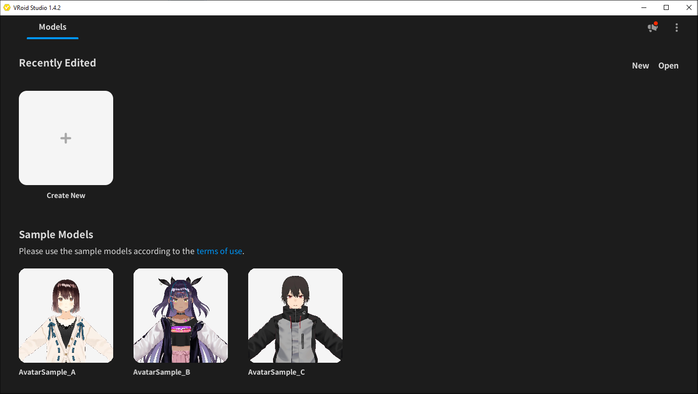
2. Customize the avatar as you please. As you customize your avatar, it’s important to follow the guidelines. Refer to the official VRoid Studio guides found here.
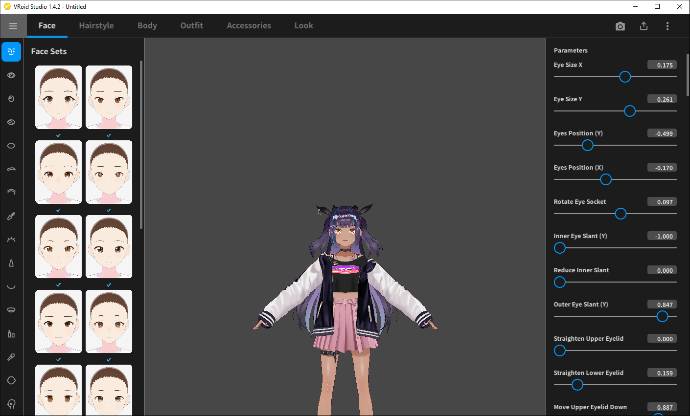
3. Export .vrm file by going to export button, selecting Export as VRM.
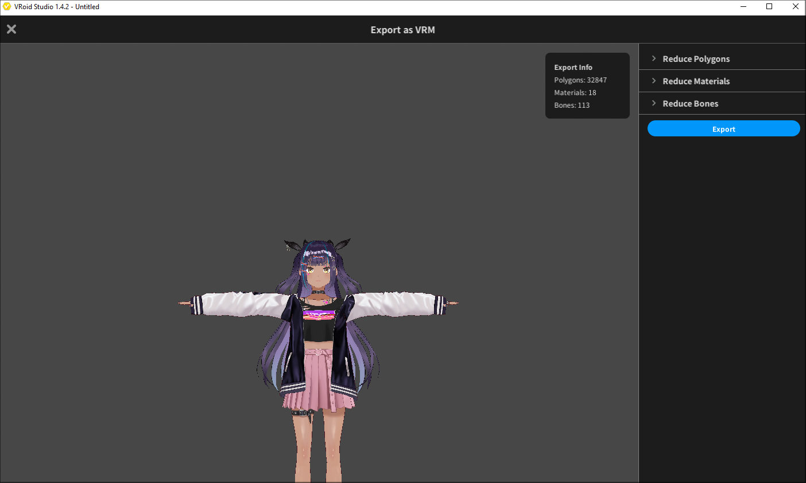
4. There’s an intermediary step in which you can reduce polygons, materials, and bones. Make what changes you consider necessary for your model, or leave it as is, and further select Export.
5. Open Animaze, go to avatar gallery, scroll to My Avatars shelf and click on the + (plus) box to upload your .VRM model.
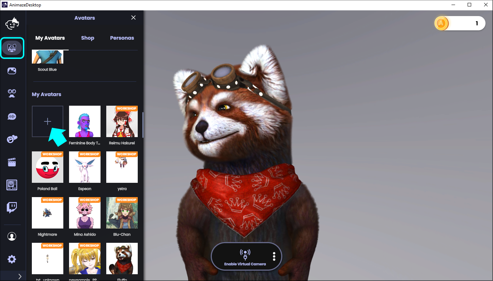
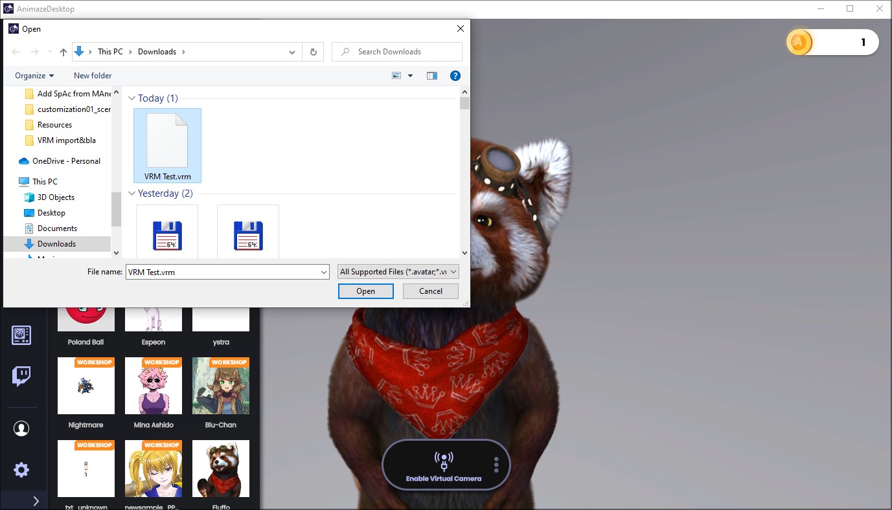
6. Your avatar is now in Animaze! By default, the 4 standard Special Actions (Hello, Ok, Shrug & No) are available on it as well.
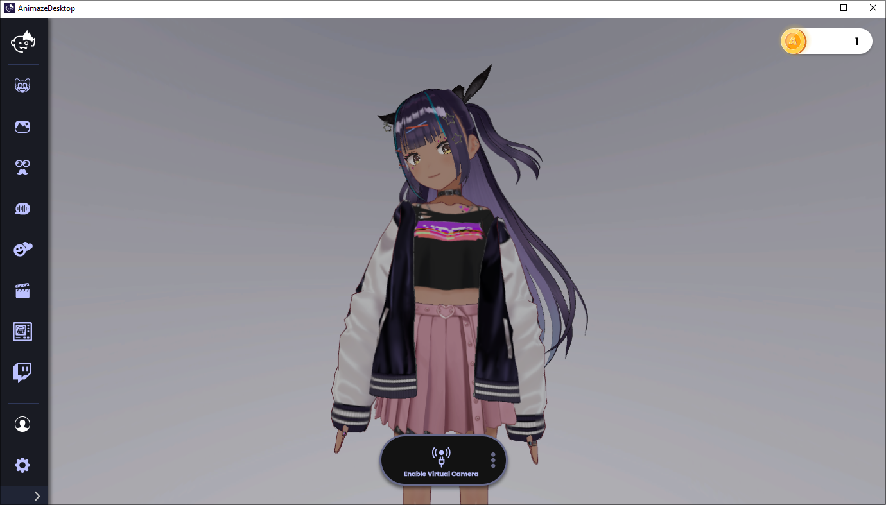
The Editor method
Let’s say you need to change some details on your .VRM avatar. For that, you will use the Animaze Editor prior to importing it as above. Let’s do this:
1.Open Animaze Editor. If the Editor is not appearing in your Steam library, don’t forget to select TOOLS in the dropdown menu.
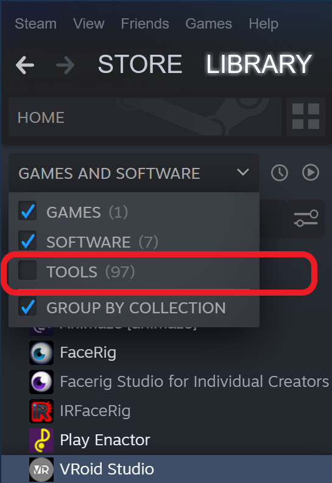
2. Go to Assets > Import 3D Objects. This will open a file explorer that supports .fbx and .vrm files.
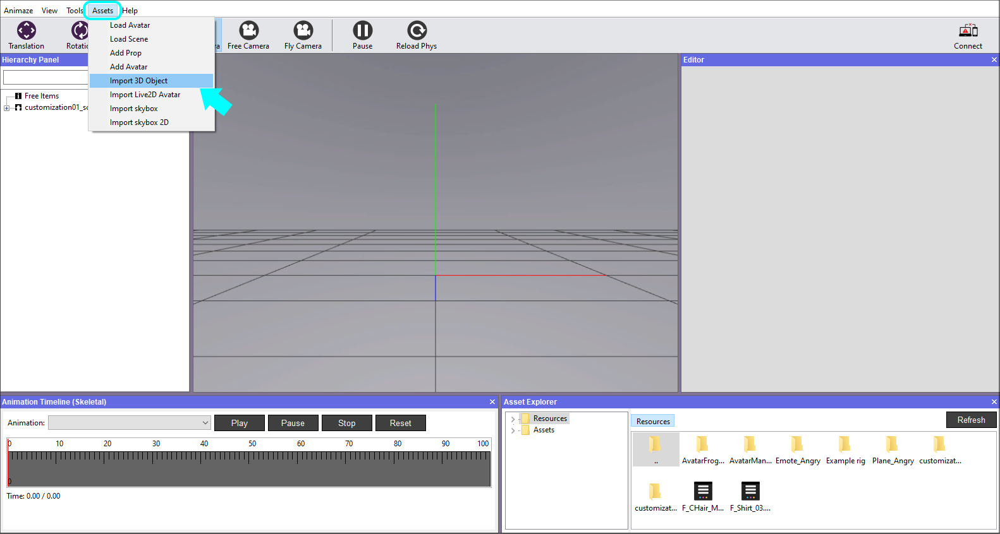
3. Open your file & then click Import on the Importer window (second pic). Let the importer run; this may take a couple of minutes, and tempering with it will make the app unresponsive.
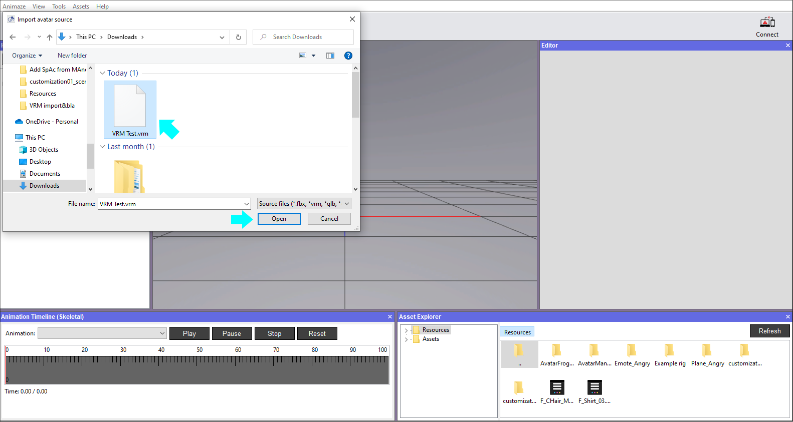
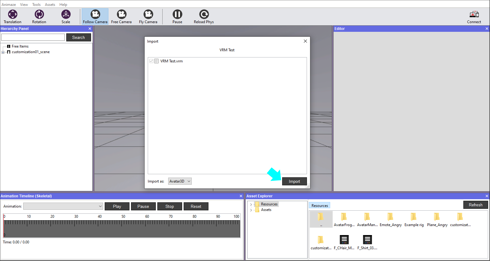
4. Close all import logging windows. Then you should see your model loaded into the Editor.
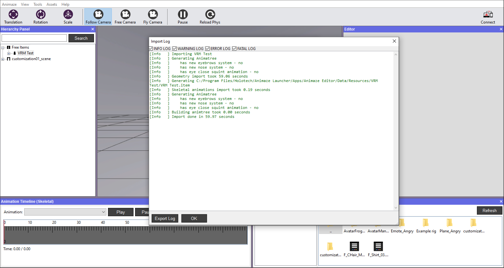
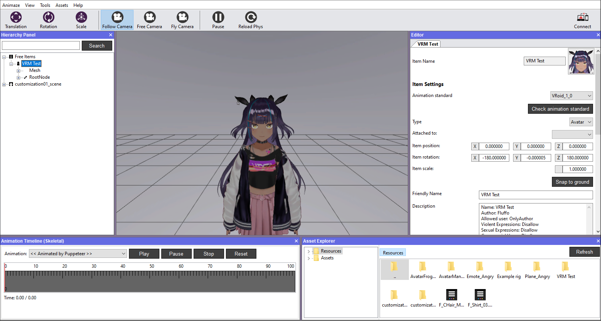
5. Now you can modify material components (add/remove), change avatar’s name&description, change camera settings, but consider the info here beforehand.
6. After you finish with your changes, right-click on the avatar in the Hierarchy Panel and select the Bundle option. Save your changes when prompted or before selecting the bundling option. The system will create the .avatar file that’s ready to be added in Animaze Desktop.
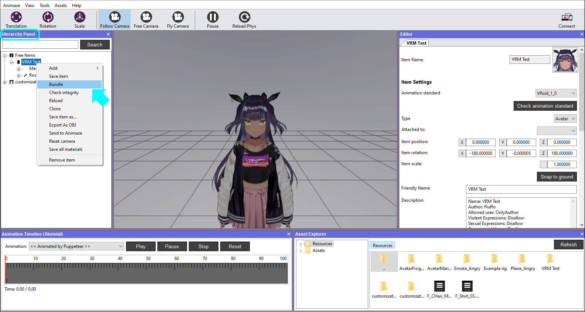
PRO TIP: Take note of where you save your bundle. You will need to find the bundle in the next step.
7. All that is left to do now to get it into Animaze is step 5 from the Direct-in-app method above.
If you encounter problems such as crashes (on import or while using), shading issues, physics issues, animation, or retargeting issues, please contact support[@]animaze.us and provide as much information as possible. Important information includes:
- Applications logs (Animaze Editor and Animaze Desktop)
- The .vrm file
- (if applicable) what is wrong with the shading/physics/animation parts
- (if applicable) screenshots or videos with expected results on the shading/physics/animation parts
- (if applicable) screenshots or videos with the issues encountered
TIP: If you need to modify your existing *.vrm/*.glb format avatar (add headphones or other accessories) in Blender or other software out there, make sure you export it in the same format you initially imported it. Take into consideration the conventions agreed for the specific format.
Share your creations with us on our Discord server here.